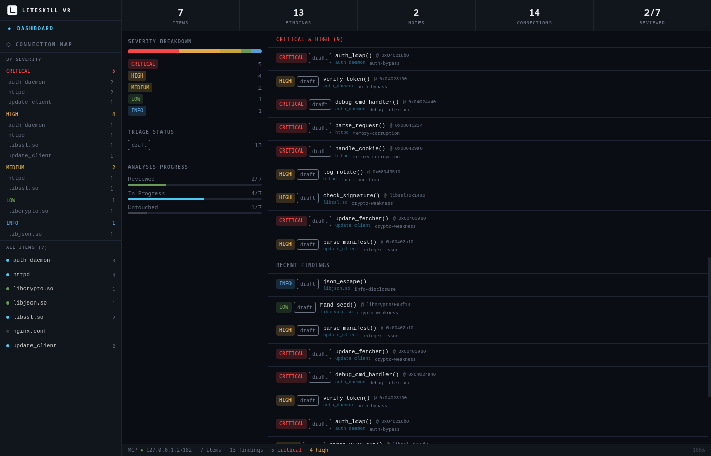

The pitch
As a cybersecurity researcher using AI, my life is a mess of markdown files and hard-to-read chat histories. I wish there were a standard format I could give to my agents that would let me easily view status — and a single file I could share with others or save for future reference.

What's in the box
- Structured research database — items, notes, items of interest, and connections, all in one project.
- Read-write MCP server — 31 tools so Claude Code or Codex can query and document alongside you.
- Registered vocabularies — tags and connection types registered up front to stop drift across sessions.
- Full-text search & structured filters — SQLite FTS5 across every entity.
- Connection map — a Cytoscape.js graph of how components relate across an image.
- One file per project — a standalone
.lsvrSQLite database; easy to back up or share. - Headless MCP binary —
liteskillvr-mcpruns the same interface with no GUI for CI and servers. - Offline-first — everything stored locally; no cloud sync.
Start here
01 // Read
Introduction
What LiteSkill VR is, its goals and non-goals.
02 // Install
Installation
Pre-built packages for Linux, macOS, and Windows.
03 // Run
Your first project
From a fresh install to your first finding.
04 // Agents
Working with AI agents
Connect Claude Code or Codex over MCP.
// Model
Data model
Items, notes, IOIs, connections, tags.
// Full
Guide index
Every chapter, in order.
Run it
pnpm install
pnpm tauri dev